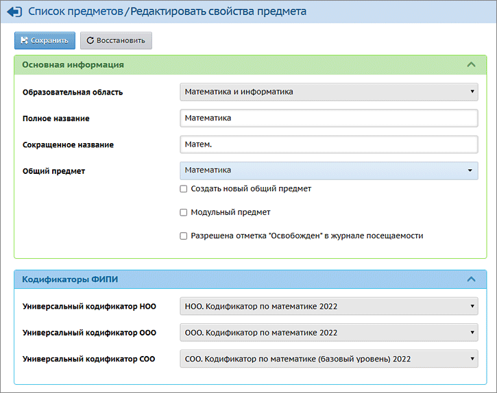

В системе "Сетевой Город. Образование" содержатся актуальные Универсальные кодификаторы ФИПИ на текущий учебный год. Перед заполнением протоколов контрольных работ в системе необходимо убедиться, что все КЭС корректно привязаны к соответствующим предметам.
Для этого пользователь с ролью администратора в школе должен:
| 1) открыть экран Планирование -> Предметы;
|
| 2) щёлкнуть по названию конкретного предмета;
|
| 3) убедиться, что в свойствах предмета выбраны правильные Универсальные кодификаторы из выпадающего списка:
|
| · | для начальной школы (как правило, с 1 по 4 кл.) необходимо использовать Универсальные кодификаторы начального общего образования,
|
| · | для классов средней ступени (как правило, с 5 по 9 кл.) – использовать Универсальные кодификаторы основного общего образования,
|
| · | для классов старшей ступени (как правило, 10-11 кл.) – использовать Универсальные кодификаторы среднего общего образования.
|
Привязка осуществляется для каждого предмета в отдельности.
